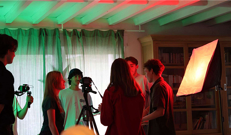
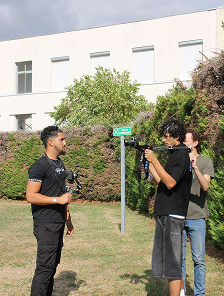
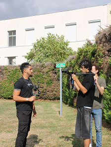
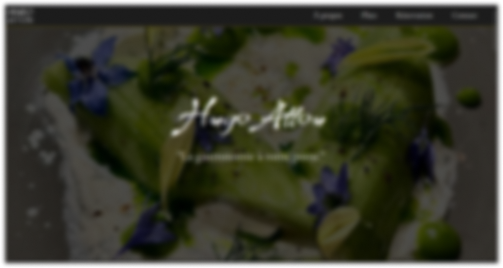

Yanis ATTOU
PROJETS
LONG MÉTRAGE
“The Small Death That Occured”
Making of
 

Plans
“C’est durant une période d’un mois et demi que Yanis m’a accompagné en tant que régisseur, cadreur et preneur de son sur mon projet personnel The Small Death That Occurred. Il a su proposer des idées pertinentes, se montrer motivé, à l’écoute et attentif à travers chaque plan. Malgré un travail de nuit très physique mené en parallèle, Yanis est venu à la plupart des tournages, toujours bienveillant et motivé. Sa présence fut essentielle. Il a très rapidement su utiliser l’équipement et être à l’aise, alors même qu’il s’agissait pour lui de sa première expérience avec des caméras hybrides (Sony ZV-E10 et Lumix G80), un micro perche, des micros cravates, ainsi que des projecteurs, des stabilisateurs et des trépieds. Dès son premier tournage, il savait déjà régler différents paramètres sur les caméras hybrides. Son professionnalisme et sa rigueur le distinguent, sans compter qu’il cherche profondément à bien faire et qu’il possède toutes les qualités requises pour apprendre, découvrir et, surtout, réaliser.” Niels Ottavis-Kalff, réalisateur
AFFICHES
SITE WEB
Dans le cadre d’une SAÉ lors de ma première année de BUT Informatique, j’ai dû créer un site web pour un client réel après avoir échangé plusieurs fois avec ce dernier. J’ai obtenu la meilleure note de la promotion au plus gros projet de web de l’année.
SHOOTINGS PHOTOS
Julien Cluchague - novembre 2024(photos 1/3/6)
Louanne Bernaudeau - octobre 2025(photos 2/5)
Maryam Ben Si Ali - janvier 2026(photos 4)